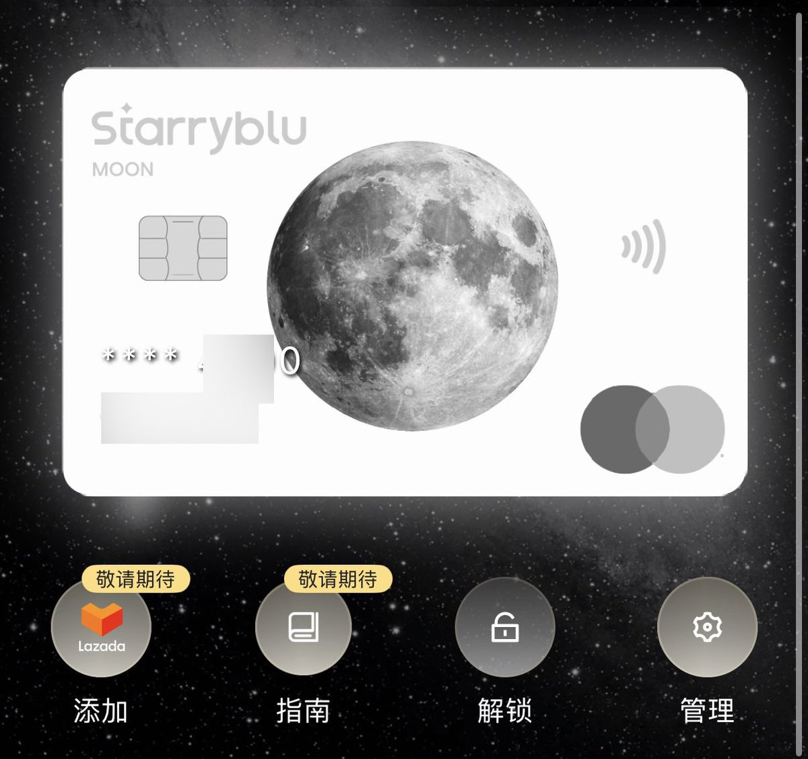
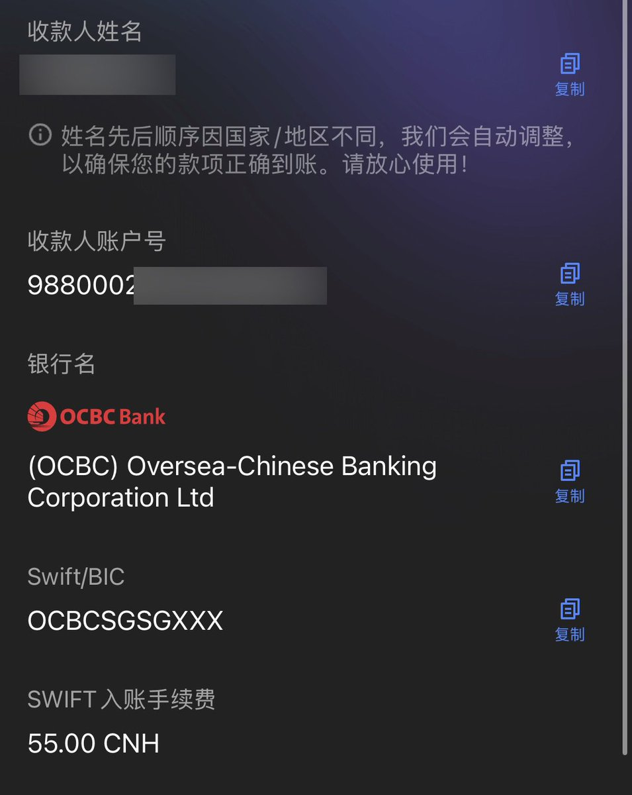
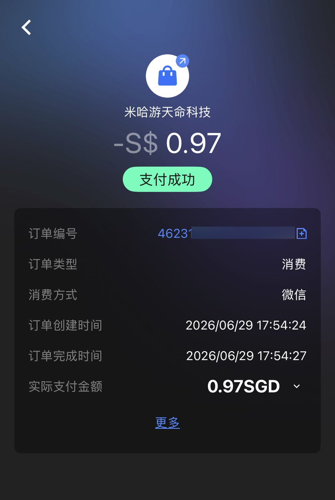

Starryblu 银行卡预计将在本月内就开放啦，想要提前开通的用户可以看这里⬇️
通过我的专属链接或邀请码注册的用户，如需申请提前开通，可私聊或者留言发给我Starryblu ID，提交官方白名单帮你开通
仅限专属邀请注册用户填写，其他渠道注册的用户没有办法哦～

通过我的专属链接或邀请码注册的用户，如需申请提前开通，可私聊或者留言发给我Starryblu ID，提交官方白名单帮你开通
仅限专属邀请注册用户填写，其他渠道注册的用户没有办法哦～



最近在用的一个跨境支付工具：Starryblu，分享一下。
定位和 Wise、Revolut 类似——多币种账户 + 国际汇款 + 卡消费，走的是新加坡 MPI 牌照。
线上开户，KYC 完成直接下卡，流程很快，卡片优点也很多：
✅10+ 主流币种，余额互转
✅Mastercard 虚拟卡 / 实体卡
✅轻松订阅ChatGPT
✅国际汇款 https://t.co/F9vHDztakk
定位和 Wise、Revolut 类似——多币种账户 + 国际汇款 + 卡消费，走的是新加坡 MPI 牌照。
线上开户，KYC 完成直接下卡，流程很快，卡片优点也很多：
✅10+ 主流币种，余额互转
✅Mastercard 虚拟卡 / 实体卡
✅轻松订阅ChatGPT
✅国际汇款 https://t.co/F9vHDztakk